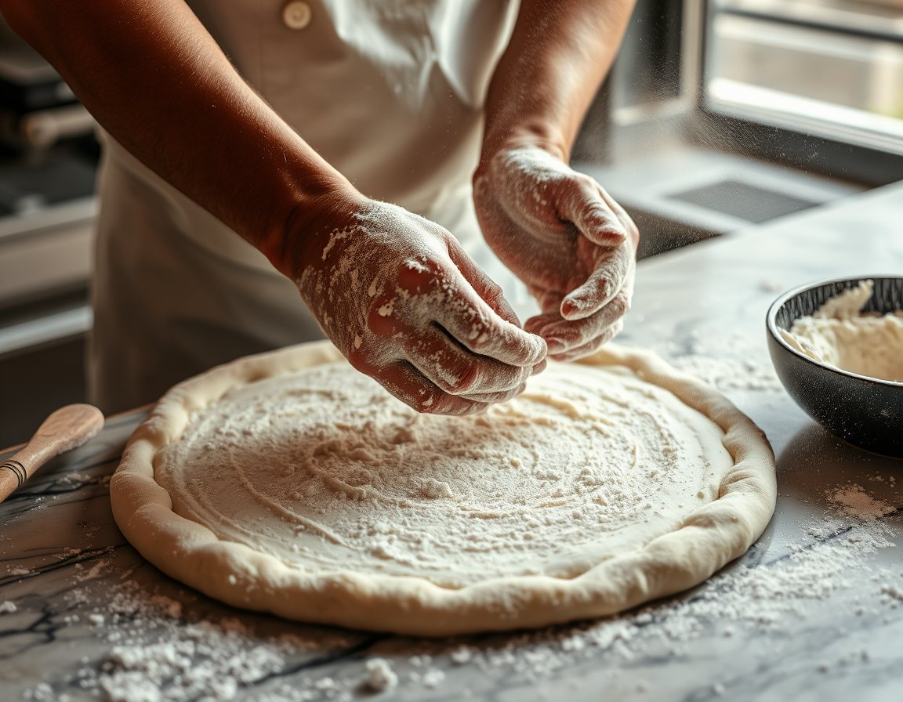
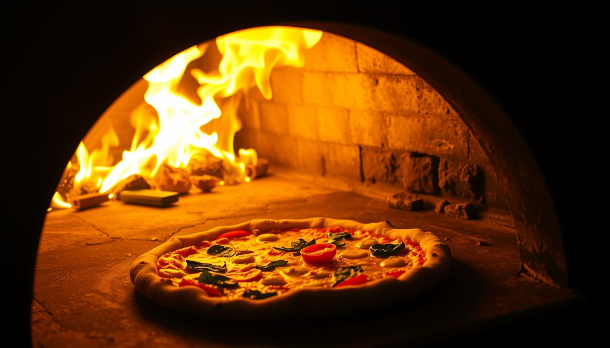
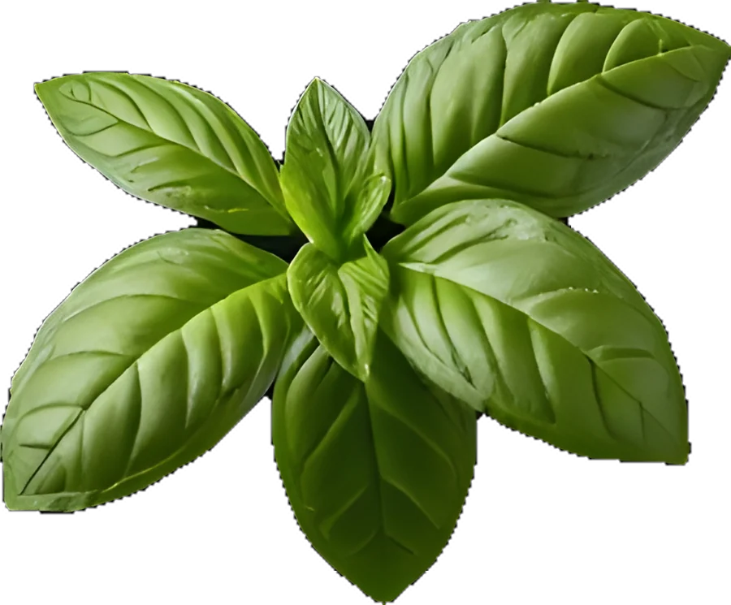

Napoliten pizza · Denizli
Doksan saniye. Dokuz yüz derece.

48 saat dinlenen hamur, San Marzano domates, taze fior di latte. Taş fırında, gözünüzün önünde.
Çalışma saatleri
48 saat dinlenen hamur, San Marzano domates, taze fior di latte. Taş fırında, gözünüzün önünde.
Çalışma saatleriHamur iki gün soğukta dinlenir; hafif olur, şişkinlik yapmaz.
Meşe odunuyla yanan kubbe fırın, pizzayı içten ve dıştan aynı anda pişirir.
Kenarlar kabarır, alt taraf çıtırlaşır, ortası yumuşak kalır.

İtalyan tip 00 un, deniz tuzu, su ve çok az maya. Başka hiçbir şey. Farkı yaratan malzeme değil, zaman.

Tezgâh önündeki altı sandalyeden pizzanızın fırına girişini ve çıkışını izleyebilirsiniz. Rezervasyonda “fırın önü” seçin.
Delikli kutu, kâğıt yastık ve 20 dakikalık teslimat alanı: pizza size buharlanmadan gelir.
